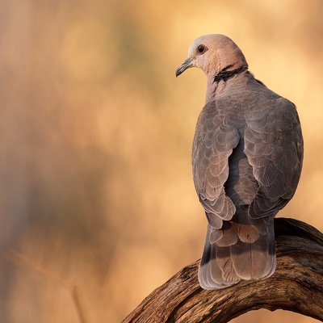

<!-- Author Sidebar - single source of truth for all pages -->
<!-- Copy sidebar HTML into each .qmd raw HTML block -->
<!-- To update sidebar sitewide, update this file and copy to all .qmd files -->
<div class="author-sidebar">
  <div class="author-avatar">
    
  </div>
  <h3 class="author-name">Hansjoerg Kunc</h3>
  <p class="author-bio">Senior Lecturer studying how animals cope with environmental change</p>

  <a href="contact.html" class="contact-btn">Contact Me</a>

  <ul class="author-links">
    <li class="location"><i class="fas fa-location-dot"></i>Belfast, UK</li>
    <li class="institution"><i class="fas fa-building-columns"></i>Queen's University Belfast</li>
    <li><a href="mailto:h.kunc@qub.ac.uk"><i class="fas fa-envelope"></i>Email</a></li>
    <li><a href="https://scholar.google.com/citations?user=XXXXXXX"><i class="ai ai-google-scholar"></i>Google Scholar</a></li>
    <li><a href="https://orcid.org/0000-0003-4709-1352"><i class="ai ai-orcid"></i>ORCID</a></li>
    <li><a href="https://www.researchgate.net/profile/Hansjoerg-Kunc"><i class="fab fa-researchgate"></i>ResearchGate</a></li>
    <li><a href="https://github.com/hansjoergkunc"><i class="fab fa-github"></i>GitHub</a></li>
  </ul>
</div>
